A community currency (cc) - is a money created and used by consenting parties on their own terms.
A cc system only has the value its community of users gives it.
A cc system will have users who are issuers, in commitment, with negative account balances, and others who are in credit, with positive account balances.
A positive balance in a cc system is worth whatever you can get with it. (Sometimes that's virtually nothing, as all users need to know and accept.) Hence it is good to have some idea of what a particular cc is and does, and what you can expect it to do for you, before accepting it in exchange for something (anything) that matters to you - products, services, assets, time or whatever.
Nothing backs the value in a cc system but the intent and capacity of those in commitment that they will honour their undertakings.
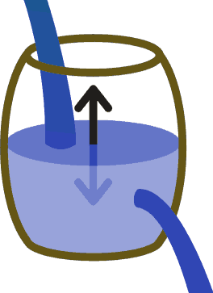
This is really the only way to think of normal money - it comes and goes and the level in our barrel rises and falls.
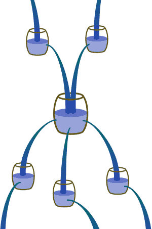
We're in the middle of a cascade - hoping it keeps coming as fast as it's going.
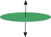
A virtual money can be considered as though it had a virtual level rising and falling in a virtual container.
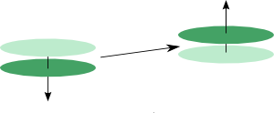
So payment in a virtual money system means the level of one trading account goes down and another trading account goes up by the same amount.
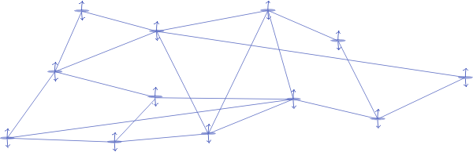
A system of accounts trading in this way is only stable and sustainable when it has a closed group of accounts. The money only goes round. The money must go round.
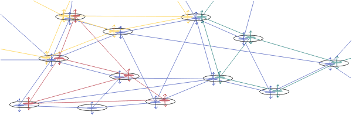
Multiple is of course possible, so inevitable.
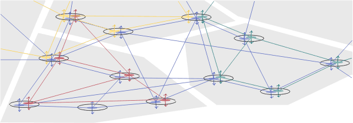
Inter-domain trading makes open money scaleable.
Almost all the history of community currency (cc) development has been singularly monocultural - one group of account holders transacting in accordance with one agreement structure, generally using one recording procedure. Systems have operated in isolation from others, even when geographically or otherwise close to others of a similar or even identical nature. This is a severe limitation, and in fundamental contradiction of the opportunities inherent in virtual money systems - you can have any virtual currency, you can have many. And so we will.
Any open money software gives users access to many currencies. Users can create their own systems on their own terms, as easily as they can start an email list on google or yahoo.
For ease of use and rapid proliferation the namespace architecture for naming user accounts and currency systems should be simple. And further, for optimal viral propagation of the network, the stewardship and administration of namespaces, currencies and accounts must be easily delegated.
First there are identities - people and organisations, generally real but also possibly virtual.
All they need have in common is an interest in virtual money and its application in real and virtual worlds.
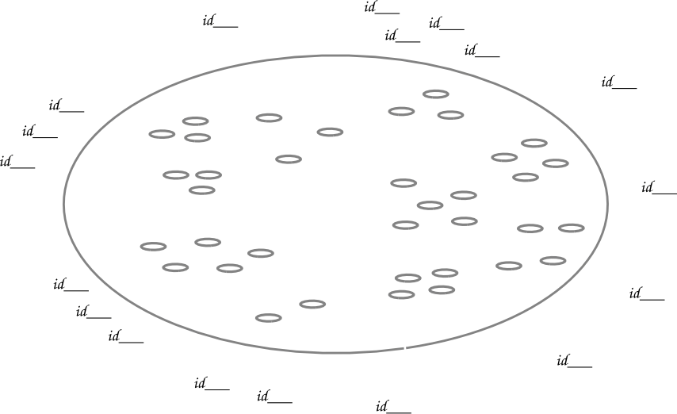
Registered identities can name accounts for recording transfers in community currencies (cc) in open money name spaces.
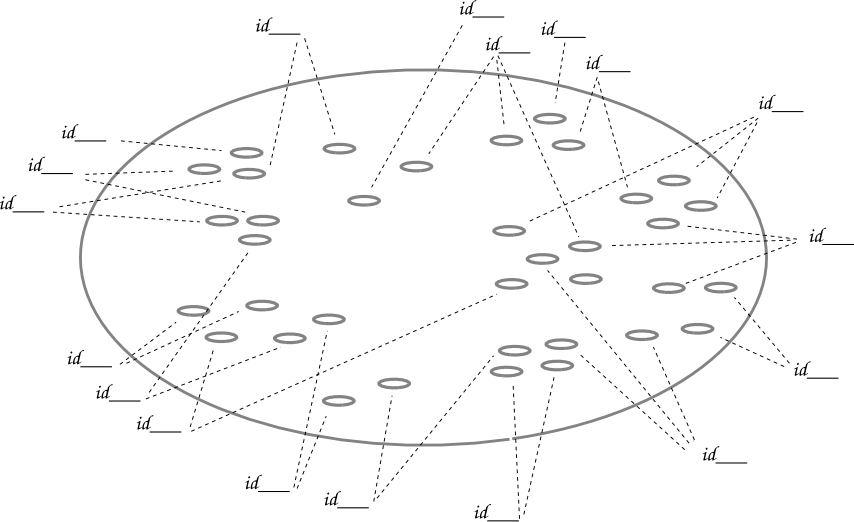
Each registered identity can have one or several trading accounts.
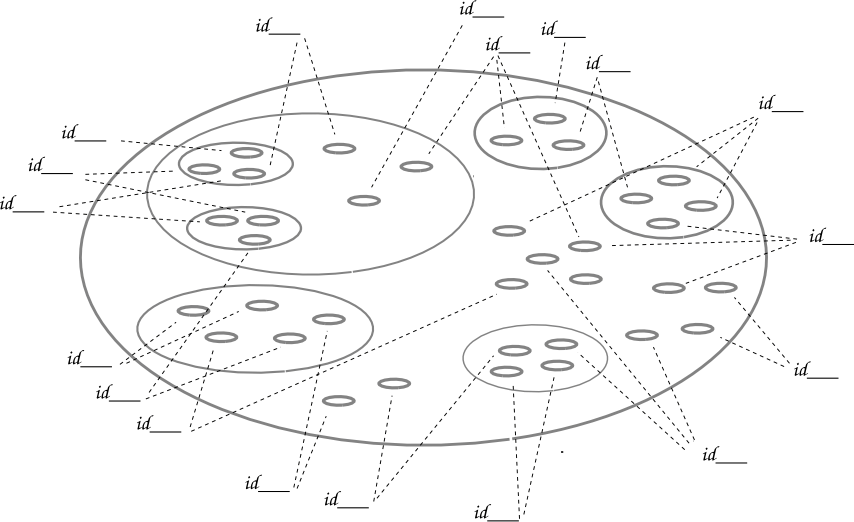
Trading accounts are grouped in spaces and sub-spaces, which will generally be communities of place or communities of interest.
Initially, each registered profile identity is given permissions to create trading accounts, currency systems (and recursive namespaces, on request) within particular name spaces.
Registrants can also request access to geographically defined spaces of the form
"local.region.country-code"
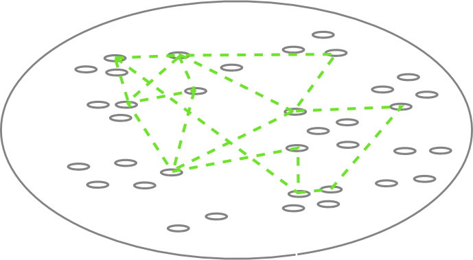
The registered identities log in through their open money server and use their trading accounts to record transactions in a community currency (cc).
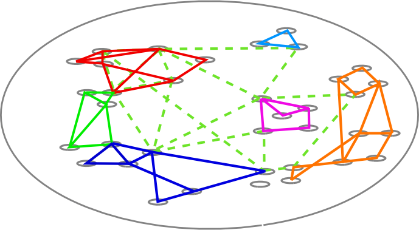
Many cc are better than one. Each grouping of users is a different community of interaction, and most users will eventually participate in several.
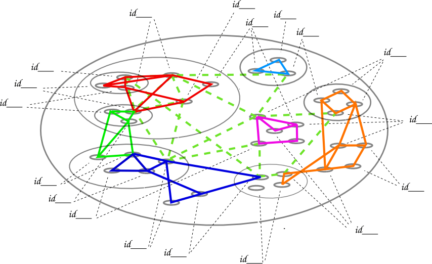
All together now - but distinct.
There are two patterns - trading accounts grouped in spaces of place or interest - who we are, and trading accounts grouped by their interactions - what we do.
There are communities of identity and communities of transaction.